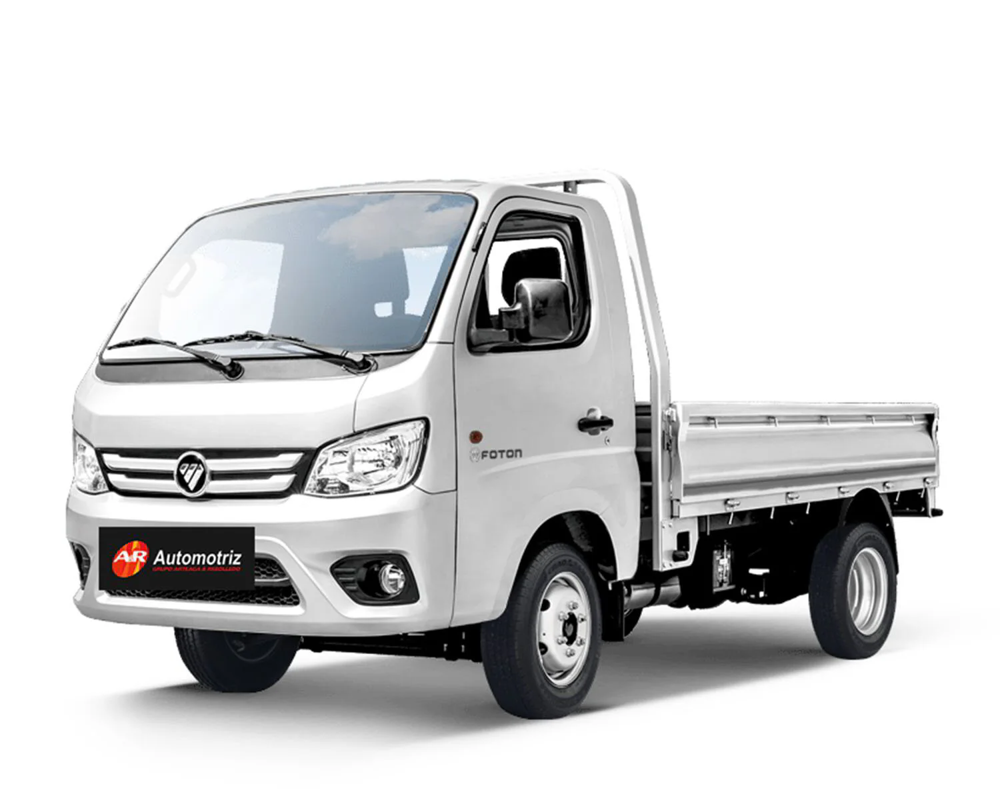
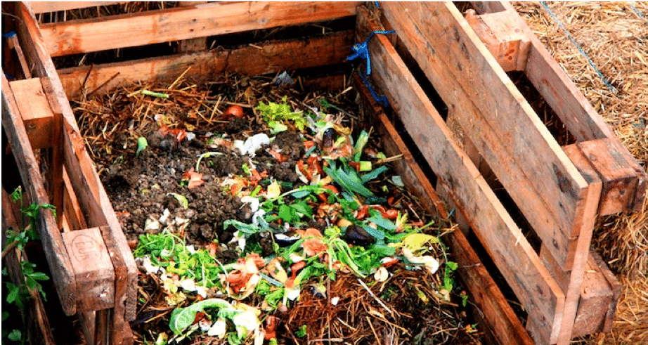

Transformando residuos en vida
Servicio de reciclaje organico y compostaje en Pichilemu
Unete al cambioNuestros Servicios
Nuestro Proceso
1. Recolección
Retiramos tus residuos orgánicos en contenedores especiales, asegurándonos de que todo se transporte de manera higiénica y efectiva.
2. Clasificación
Separamos y preparamos los materiales organicos para un compostaje optimo, diferenciando por tipo y caracteristicas.

3. Compostaje
Transformamos los residuos en compost mediante un proceso natural, controlando todos los factores para obtener la mejor calidad.
4. Resultado
Obtenemos compost de calidad para enriquecer la tierra, cerrando el ciclo de la economia circular y devolviendo nutrientes al suelo.

Nuestro Impacto

"El servicio de Tomas Verde ha cambiado completamente la manera en que manejamos nuestros residuos. Es increible ver como nuestros desechos se transforman en algo util, y el equipo siempre es puntual y amable. ¡Recomendado al 100%!"
Unete al Cambio
¿Listo para comenzar?
- ✓ Servicio personalizado adaptado a tus necesidades
- ✓ Recolección programada en horarios convenientes
- ✓ Asesoría continua sobre gestión de residuos
- ✓ Reportes de impacto para medir tu contribución